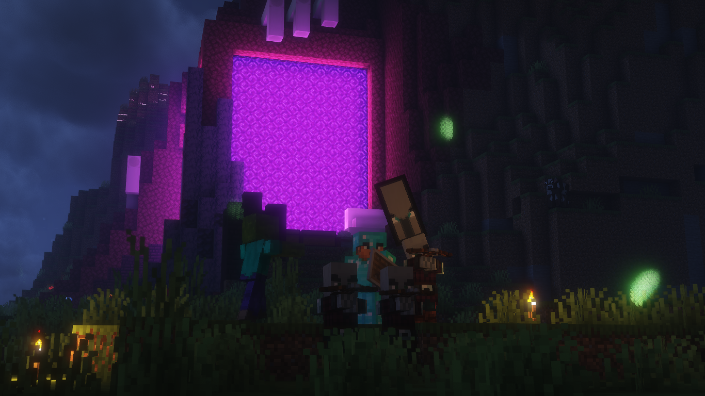
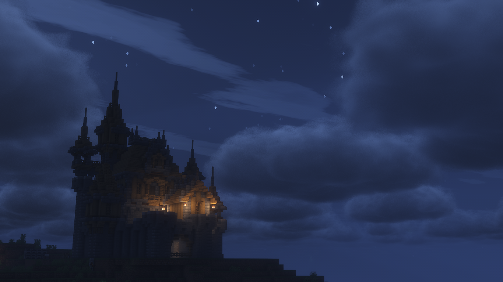
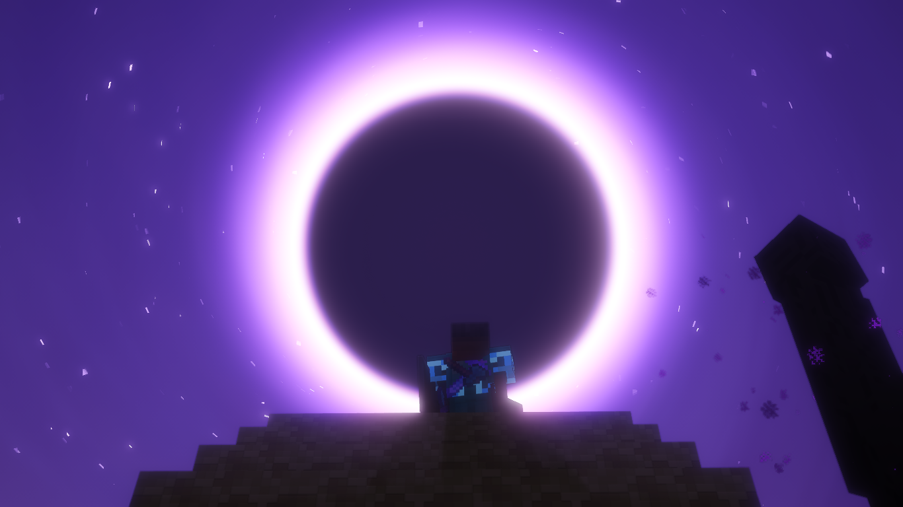
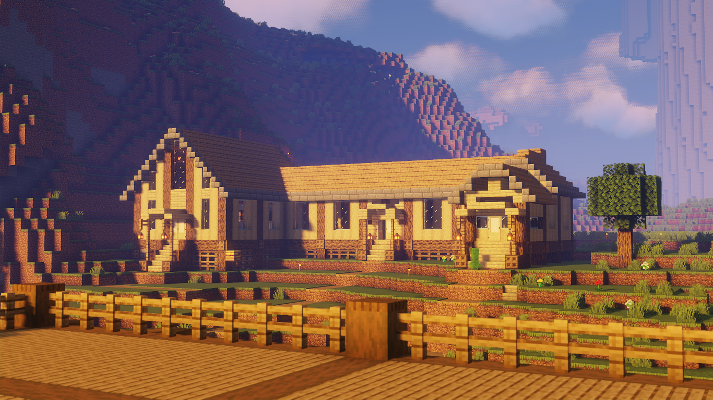
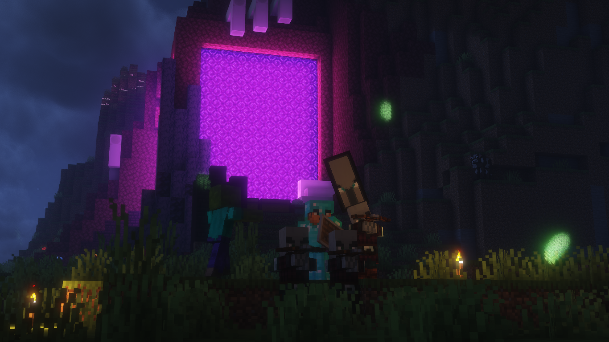
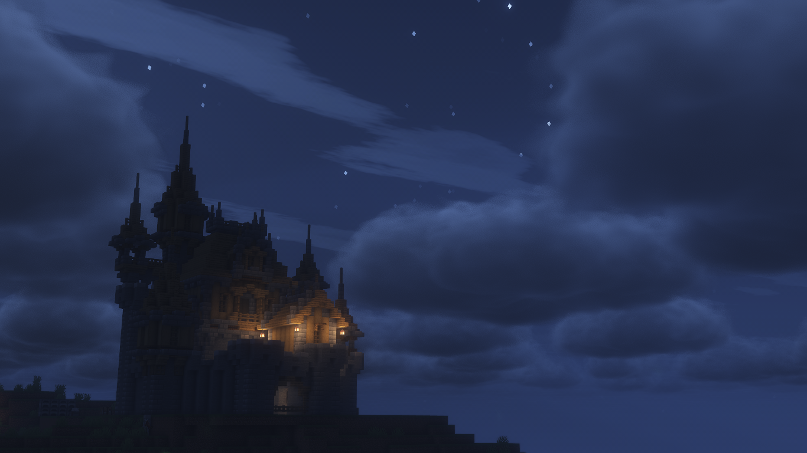
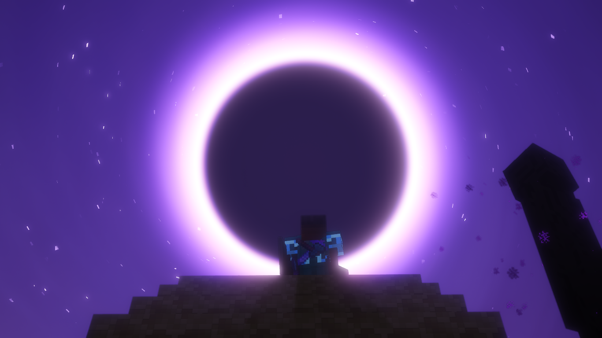
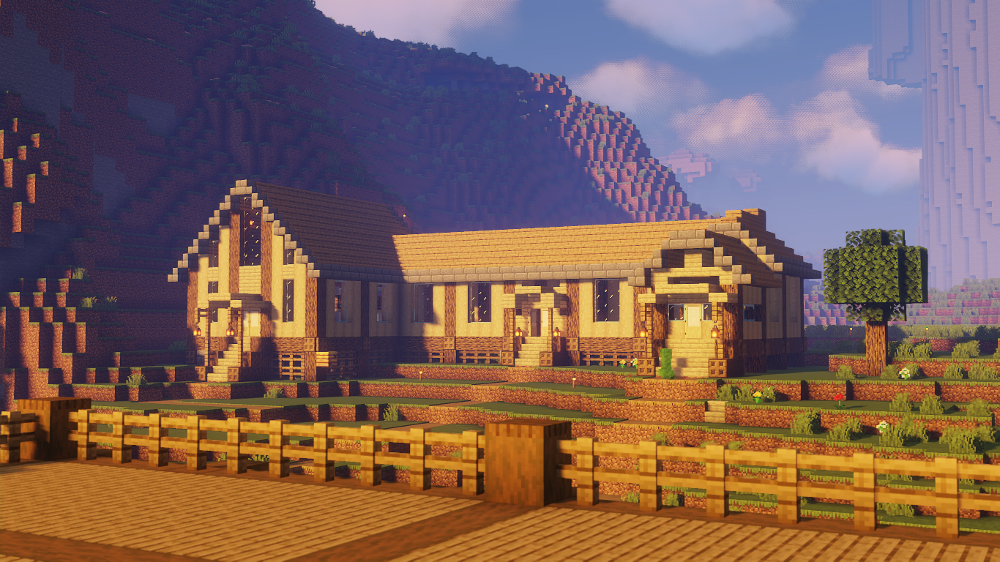
Valakra atau bisa di bilang FORTIN LAITI S2 adalah sebuah server Minecraft [whitelisted] yang beranggotakan tiga pemain aktif yang rutin bermain bersama di dalam server. Server ini merupakan kelanjutan dari Server sebelumnya yaitu FORTIN LAITI S1 yang memiliki konsep serupa dengan Valakra. Sayangnya, server pertama hanya bertahan sekitar tiga minggu sebelum akhirnya kami memutuskan untuk berhenti bermain, karena beberapa dari kami mulai merasa bosan dengan Minecraft pada saat itu.
Namun, pada tanggal 25 Mei 2025, kami memutuskan untuk kembali bermain Minecraft. Alih-alih melanjutkan server lama, kami memilih untuk memulai dari awal dengan semangat baru.
FORTIN GALLERY
VALA GALLERY
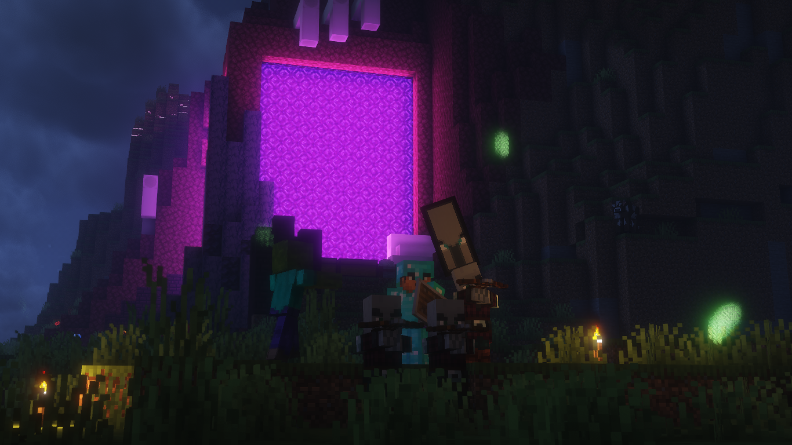
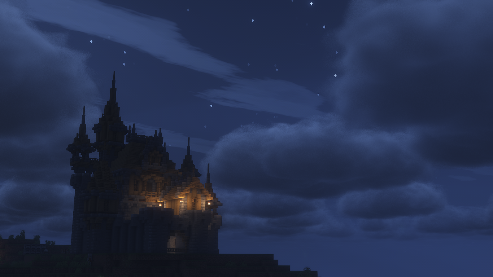
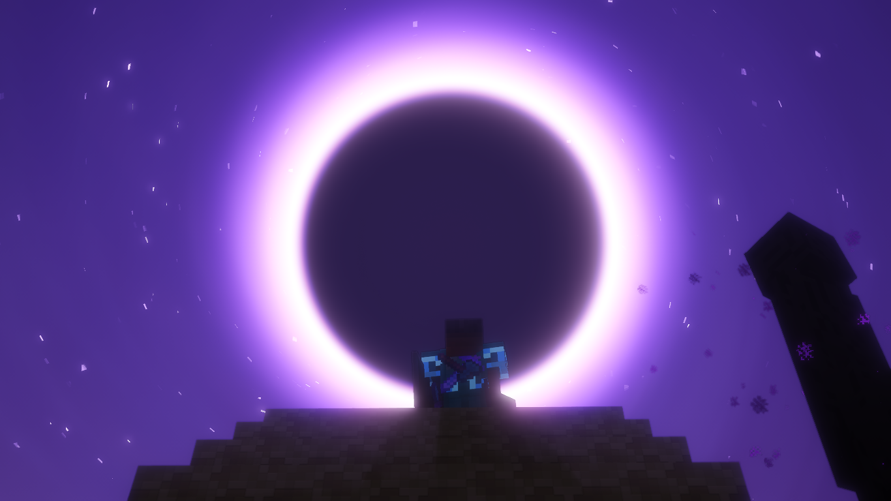
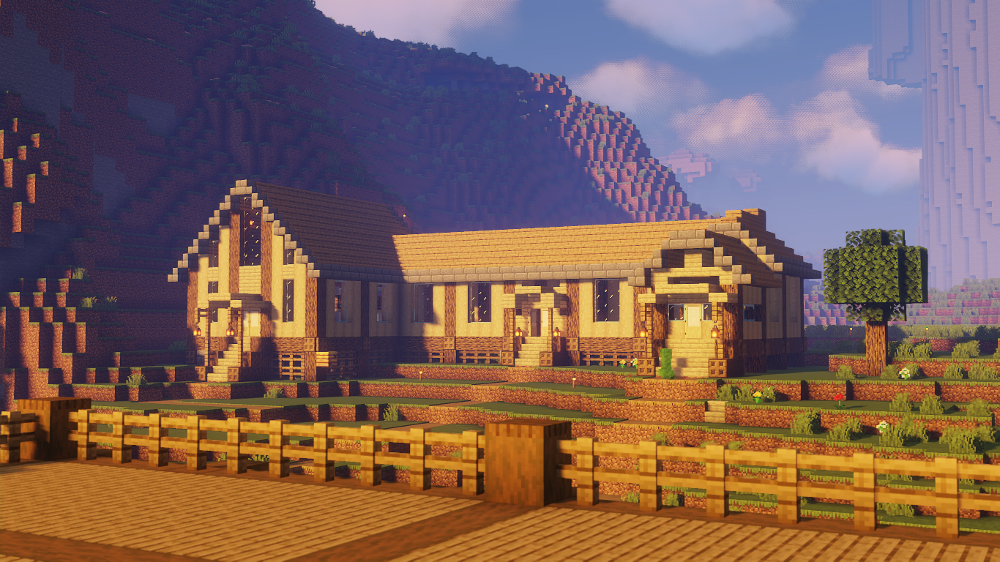